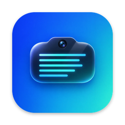
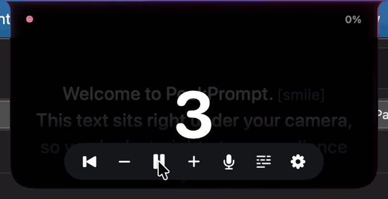

PeekPrompt
A teleprompter that lives in your MacBook's notch, right under the camera, so you look at your audience while you read.

- Scrolling modes: steady Classic and Voice-Activated (moves only while you talk). Pro adds Word Tracking, which follows the words you say.
- Presentation and Memorize modes (Pro): one slide or paragraph at a time, with PowerPoint speaker notes imported slide by slide.
- Magic Polish (Pro): turn rough notes into a natural spoken script with Apple Intelligence, on your Mac.
- Hidden from screen sharing in Zoom, Meet, Teams and screenshots.
- Siri, custom keyboard shortcuts, a voice-reactive glow, OpenDyslexic, external monitors, and 10 languages. Pro adds a phone remote.
- Free and open source, with PeekPrompt Pro on the Mac App Store for the advanced features.
- Private: no accounts, no tracking, no data collected.